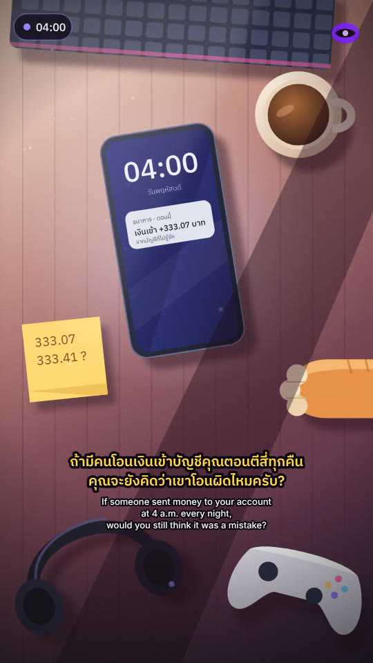
เจมส์ (บรรยาย): ถ้ามีคนโอนเงินเข้าบัญชีคุณตอนตีสี่ทุกคืน คุณจะยังคิดว่าเขาโอนผิดไหมครับ?มุมบนลงโต๊ะ มือถือขึ้น 04:00 กับแจ้งเตือนเงินเข้า
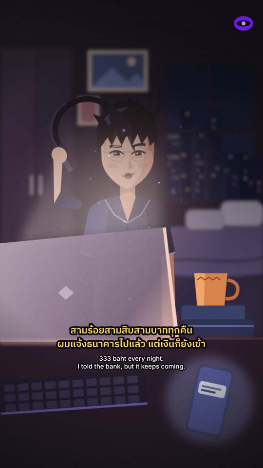
เจมส์: สามร้อยสามสิบสามบาททุกคืน ผมแจ้งธนาคารไปแล้ว แต่เงินก็ยังเข้าห้องนอนชั้นสอง จอมือถือบนโต๊ะสว่างขึ้น เจมส์ดึงหูฟังเกมออก · ตัดเข้าด้วยซูมเบลอ + เสียงวูบ
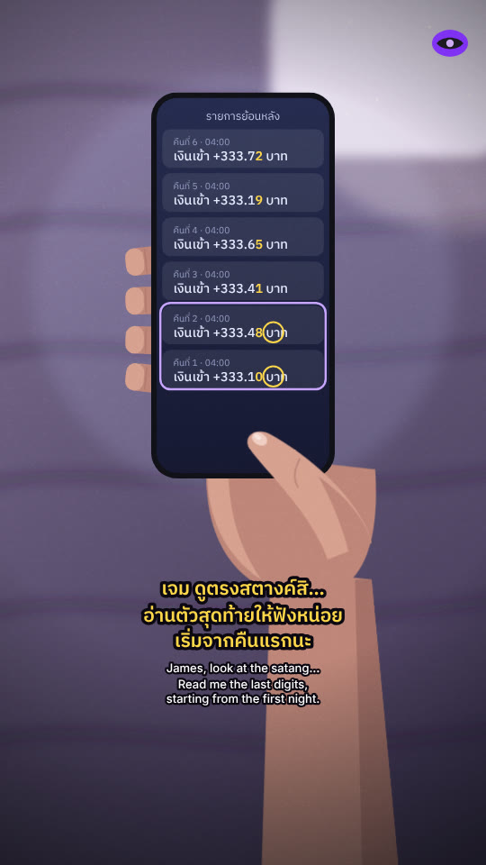
เจมส์: แฟนผมเลื่อนดูยอดย้อนหลัง แล้วก็หยุดนิ่ง / ตะวัน: เจม ดูตรงสตางค์สิ… อ่านตัวสุดท้ายให้ฟังหน่อย เริ่มจากคืนแรกนะนิ้วตะวันเลื่อนรายการย้อนหลัง หยุดที่คืนที่ 1–2 วงเลขหลักสุดท้ายไว้
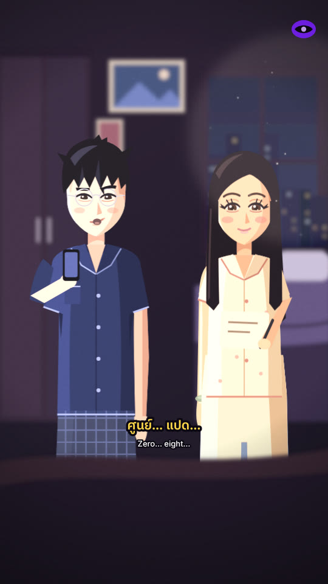
เจมส์: ศูนย์… แปด…เจมส์ถือมือถืออ่านทีละตัว ตะวันจดลงกระดาษ
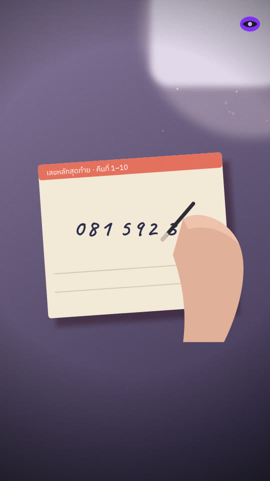
(ไม่มีบทพูด · เสียงปากกา)กระดาษใกล้ ๆ ตัวเลขขึ้นทีละตัว มือตะวันวางทับสี่ตัวท้าย
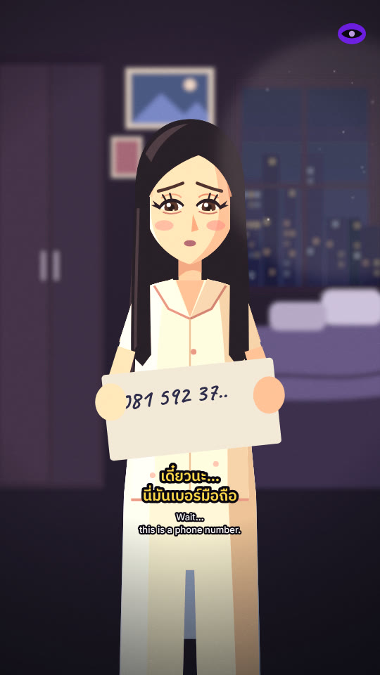
ตะวัน: เดี๋ยวนะ… นี่มันเบอร์มือถือตะวันชูกระดาษ หน้าตกใจ · กล้องสั่น + เสียงทุ้มกระแทก
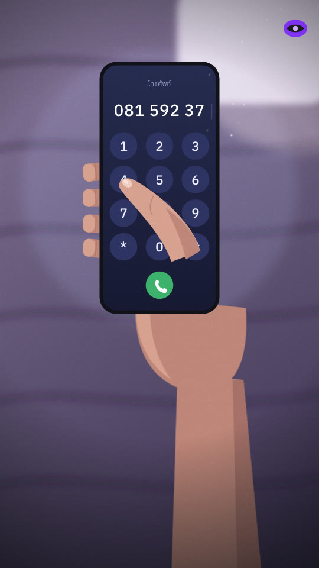
(เสียงกดปุ่มทีละตัว)ใหม่ · หน้าจอปุ่มกดโทรศัพท์ ตัวเลขขึ้นทีละหลักตามนิ้วโป้งที่กด แล้วกดปุ่มโทรสีเขียว
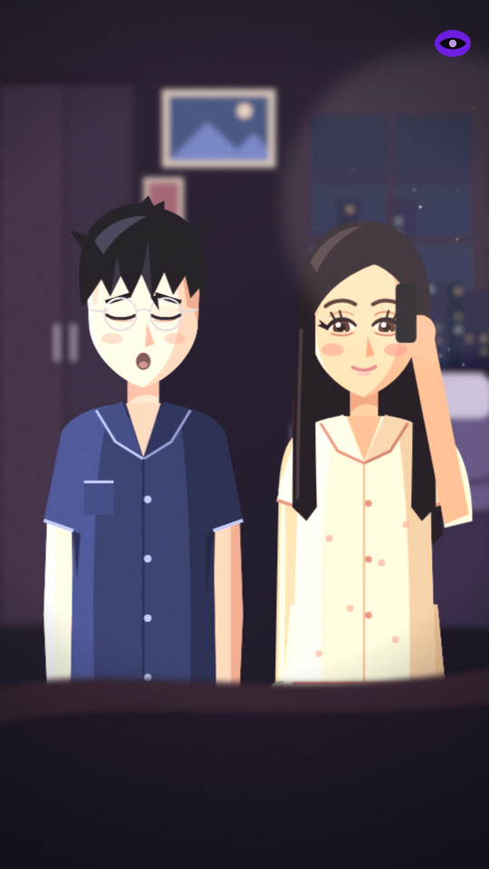
(ไม่มีบทพูด)ทั้งคู่ในห้องนอน ตะวันยกมือถือแนบหู เจมส์หน้าตื่น
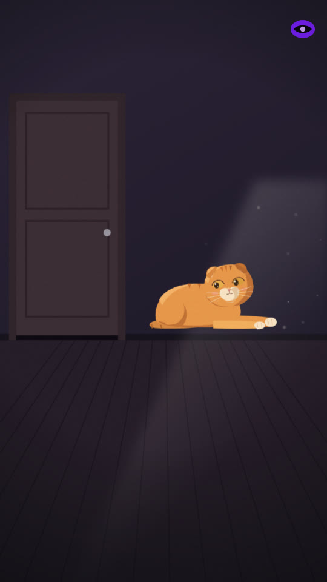
(เสียงกริ่งอู้อี้จากนอกห้อง)ดีนนอนข้างประตูห้องเก็บของ ยกหัวมองประตูทันทีที่กริ่งดัง · ตัดเข้าด้วยซูมเบลอ
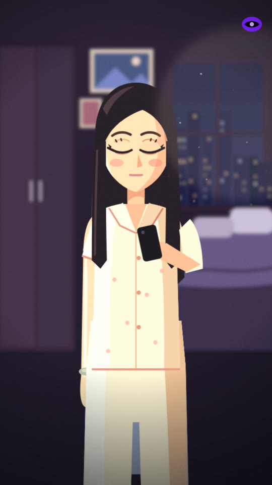
(กดวาง · เสียงกริ่งหยุดพร้อมกัน)ตะวันหุบยิ้ม เงยหน้าจากมือถือมาสบตาเจม ค้างครึ่งวินาที · ปากชมพูตุ่น
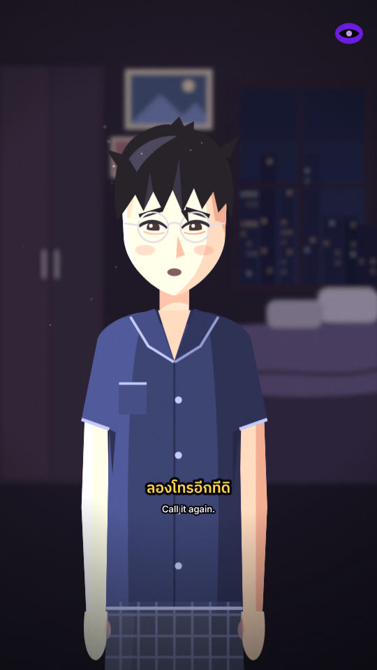
เจมส์ (กระซิบ): ลองโทรอีกทีดิเจมส์ครึ่งตัว หน้ากังวล · ปากไม่แดงแล้ว ผิวโทนเดียวกับช่วงแรก
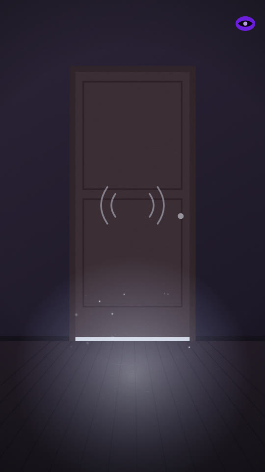
(เสียงกริ่งดังชัด · ดนตรีลดลง)ประตูบานเดิม 85:200 หน้าตรง เห็นวงกบครบ แสงลอดใต้ประตู · ซูมเบลอ + กล้องสั่น
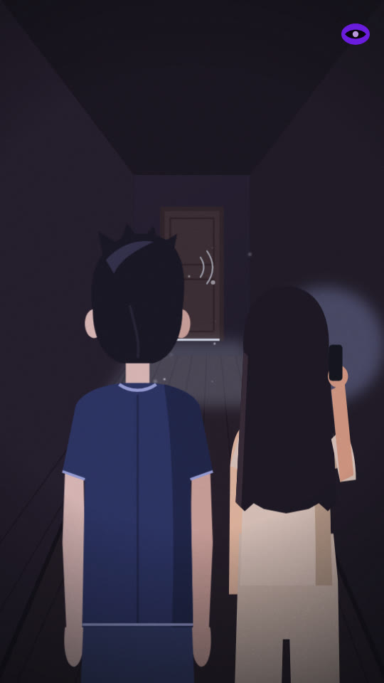
(เสียงกริ่งต่อเนื่อง)มองข้ามไหล่เจมไปที่ประตูปลายทางเดิน เจมหันตามเสียงแล้วก้าวหนึ่งก้าว ตะวันถือมือถืออยู่ข้าง ๆ
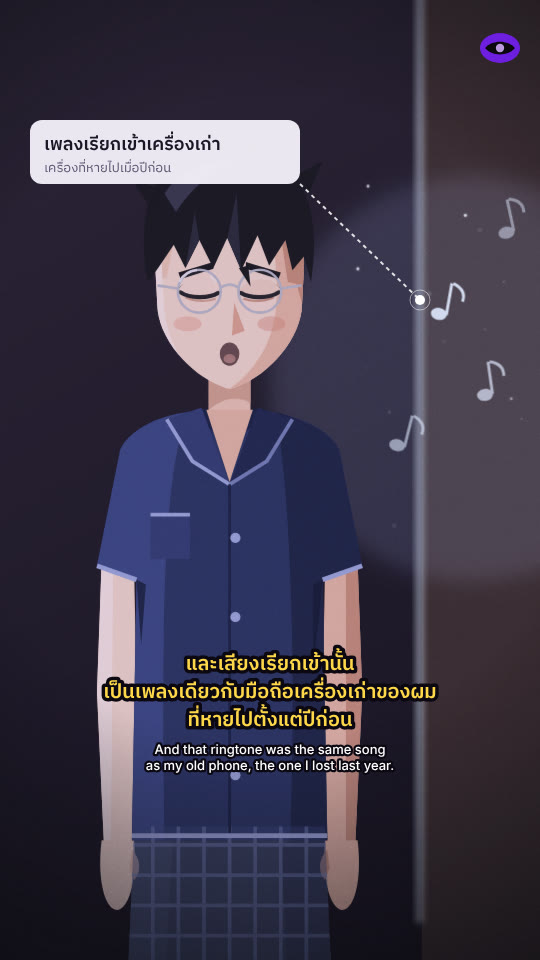
เจมส์: และเสียงเรียกเข้านั้น เป็นเพลงเดียวกับมือถือเครื่องเก่าของผม ที่หายไปตั้งแต่ปีก่อนเจมส์ครึ่งตัวหน้าตกใจ (ไม่ใส่หูฟังแล้ว) โน้ตเพลงลอยออกจากขอบประตู การ์ด "เพลงเรียกเข้าเครื่องเก่า"
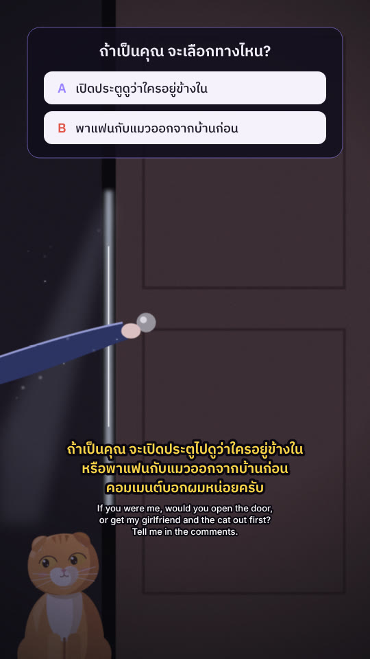
เจมส์: ถ้าเป็นคุณ จะเปิดประตูไปดูว่าใครอยู่ข้างใน หรือพาแฟนกับแมวออกจากบ้านก่อน คอมเมนต์บอกผมหน่อยครับการ์ดตัวเลือก A เปิดประตู / B พาแฟนกับแมวออกจากบ้าน มือเจมเอื้อมหาลูกบิด ดีนนั่งมองจากมุมล่าง · ต่อด้วยฉากโลโก้ odd hours